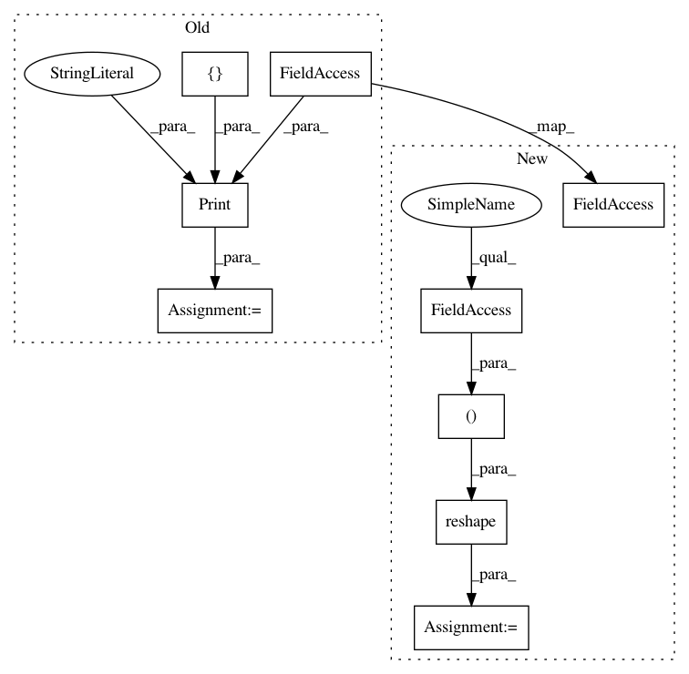

271dddf15a9f07bb9647ecf5594e079e12f2e8d2,examples/securenn/network_d.py,PredictionClient,provide_input,#PredictionClient#,155
Before Change
def provide_input(self) -> List[tf.Tensor]:
with tf.name_scope("loading"):
prediction_input, expected_result = self.build_data_pipeline().get_next()
prediction_input = tf.Print(prediction_input, [expected_result], summarize=self.BATCH_SIZE, message="EXPECT ")
with tf.name_scope("pre-processing"):
prediction_input = tf.reshape(prediction_input, shape=(self.BATCH_SIZE, 1, 28, 28))
After Change
def provide_input(self) -> List[tf.Tensor]:
with tf.name_scope("loading"):
prediction_input, expected_result = get_data_from_tfrecord("./data/test.tfrecord", self.BATCH_SIZE).get_next()
with tf.name_scope("pre-processing"):
prediction_input = tf.reshape(prediction_input, shape=(self.BATCH_SIZE, 1, 28, 28))
expected_result = tf.reshape(expected_result, shape=(self.BATCH_SIZE,))
return [prediction_input, expected_result]
def receive_output(self, likelihoods: tf.Tensor, y_true: tf.Tensor) -> tf.Tensor:
In pattern: SUPERPATTERN
Frequency: 4
Non-data size: 9
Instances
Project Name: mortendahl/tf-encrypted
Commit Name: 271dddf15a9f07bb9647ecf5594e079e12f2e8d2
Time: 2018-10-17
Author: 1278248+morgangiraud@users.noreply.github.com
File Name: examples/securenn/network_d.py
Class Name: PredictionClient
Method Name: provide_input
Project Name: mortendahl/tf-encrypted
Commit Name: 271dddf15a9f07bb9647ecf5594e079e12f2e8d2
Time: 2018-10-17
Author: 1278248+morgangiraud@users.noreply.github.com
File Name: examples/securenn/network_b.py
Class Name: PredictionClient
Method Name: provide_input
Project Name: mortendahl/tf-encrypted
Commit Name: 271dddf15a9f07bb9647ecf5594e079e12f2e8d2
Time: 2018-10-17
Author: 1278248+morgangiraud@users.noreply.github.com
File Name: examples/securenn/network_a.py
Class Name: PredictionClient
Method Name: provide_input
Project Name: mortendahl/tf-encrypted
Commit Name: 271dddf15a9f07bb9647ecf5594e079e12f2e8d2
Time: 2018-10-17
Author: 1278248+morgangiraud@users.noreply.github.com
File Name: examples/securenn/network_c.py
Class Name: PredictionClient
Method Name: provide_input